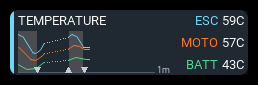
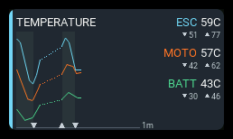
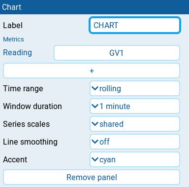
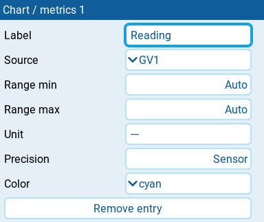

Chart
| 2x1 | 2x2 |
|---|---|
 |
 |
Records up to three numeric EdgeTX sources on one chart while armed or in flight. The legend shows each recorded value and its minimum and maximum. Wide layouts keep the legend on the right. Square and tall layouts put it above the full-width plot, with two or three metrics arranged left to right. Each metric uses two lines: its name and value, then its minimum and maximum. Use separate panels for separate charts. Select Arm switch in AeroGrid → Model settings; changes save automatically. Until model arming has been saved, an existing panel arm switch remains in use and visible. Saved model arming overrides it on every dashboard; saved None disables recording rather than restoring the fallback.
Settings

| Setting | Default | What it does |
|---|---|---|
| Label | empty | Optional chart heading. Clear it to hide the heading. |
| Metrics | none | Up to three readings. Tap + to add one, or tap an entry to edit it. |
| Time range | growing | growing keeps the recording from the start; rolling shows the latest fixed window. |
| Window duration | 1 minute | 30 seconds, 1 minute, 2 minutes, 5 minutes, or 10 minutes. Shown only when Time range is rolling. |
| Series scales | shared | shared uses one vertical scale; independent gives each metric its own scale, useful for unlike units. Independent trace heights are not directly comparable. |
| Line smoothing | off | off, light, medium, or strong. Smooths the line only, not the recorded value or extrema. |
| Accent | cyan | Panel stripe color: cyan, green, amber, or orange. Does not change trace colors. |
Metric entry
Tap a reading under Metrics to open its settings.

| Setting | Default | What it does |
|---|---|---|
| Label | source name | Name in the legend. Clear it to use the source name. |
| Source | required | Numeric EdgeTX source to record. |
| Range min, Range max | Auto | Optional lower and upper vertical bounds, in steps of 0.1. Step below the lowest numeric value to select Auto. If both are set, maximum must exceed minimum. |
| Unit | sensor unit | Unit text beside the value. Changes the label, not the number. |
| Precision | Sensor | Decimal places, 0 to 3. Step below 0 to select Sensor, using the source's precision. |
| Color | by entry order | Trace and legend color: cyan, green, orange, or amber. Defaults to cyan, orange, then green; cyan uses blue ink in Modern Light. An explicit choice keeps that color. |
| Remove entry | Deletes this reading. |
Behavior
Recording starts when the effective armed condition is active. When shared flight detection uses that same condition, recording continues through the disarm grace until flight end is confirmed, even while the chart is hidden. Rearming during grace keeps one uninterrupted flight. Without a qualified, matching flight, disarming pauses recording immediately.
A neutral background band identifies each flight behind the grid and telemetry traces: lighter in dark themes, darker in light themes. Its edges use the actual flight times, not the later qualification or confirmation times; an active flight's band grows with the recording. Grace-period samples remain on the chart beyond the band's end. No Flight counter panel or logical-switch output is required. A chart opened mid-flight shades only the recorded portion.
Upward triangles on the bottom axis mark arming; downward triangles mark disarming. The first arming that starts recording is not marked. Pausing simply stops the traces, without a label or stop marker. Resuming inserts a gap; dotted lines connect the last recorded values to the resumed values. The gap indicates omitted time, not the length of the pause. Missing telemetry breaks the traces without adding a pause gap or connector. Readouts freeze when recording pauses. Minimum and maximum cover all recorded periods, even in rolling mode.
Growing starts at one minute and expands in whole-minute steps as cumulative recording time increases. Rolling drops plot history outside Window duration, but keeps the recorded minimum and maximum. Faint solid grid lines mark recording-time intervals; the bottom-right label shows the recording-time window. Very dense pause gaps can push older points out of view.
Each vertical bound can be fixed independently: set only Range min to anchor the bottom, only Range max to fix the top, or both for a fixed range. Auto follows recorded extrema with some padding. With shared scales, the lowest configured minimum and highest configured maximum apply to all traces; an unset side follows all metrics automatically. With independent scales, each metric uses its own bounds. Fixed bounds clip the plot, not recorded values or extrema.
Smoothing reduces short-term fluctuations in the line. Light, medium, and strong respond over approximately 0.5, 1, and 2 seconds. Missing or stale readings leave gaps and dim the last value rather than recording a false zero; a fresh numeric zero is valid.
If HISTORY FULL appears, existing plot history is preserved and new plot samples stop for the full series. Readouts and extrema continue updating. Rolling mode frees space as old history leaves the window.
History is held in RAM, not saved to the SD card. It continues while the dashboard receives background updates. Reloading or restarting the dashboard, including applying editor changes that rebuild it, clears history. Editor previews reuse compatible recorded history without starting new recordings. New sources show an explicit no-data preview until saved. Flight overlays retain the latest 64 intervals; missing earlier boundaries are not guessed. Use Session reset switch in Model settings to clear recordings, extrema, and markers across all dashboards.
States
| Message | Meaning |
|---|---|
| SET ARM SOURCE | Select Arm switch in Model settings; recording is disabled without an effective switch. |
| ARM N/A | The selected armed switch condition is unavailable and no matching active flight is keeping recording running. |
| ADD METRICS | Add a source in the panel settings. |
| WAITING FOR ARM | No samples have been recorded yet. |
| NO DATA | Recording, but no configured source has supplied a valid numeric sample. |
| HISTORY N/A | History is unavailable; consult Host diagnostics. |
| HISTORY FULL | A series has stopped adding plot samples to preserve its recording; readouts and extrema still update. |
| PREVIEW | An edited chart displaying compatible existing history without changing recording. |
| PREVIEW: NO DATA | A new or incompatible recording configuration; sampling starts after saving. |